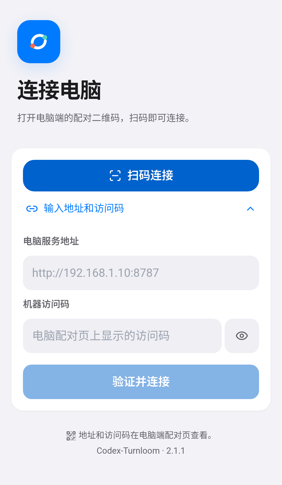
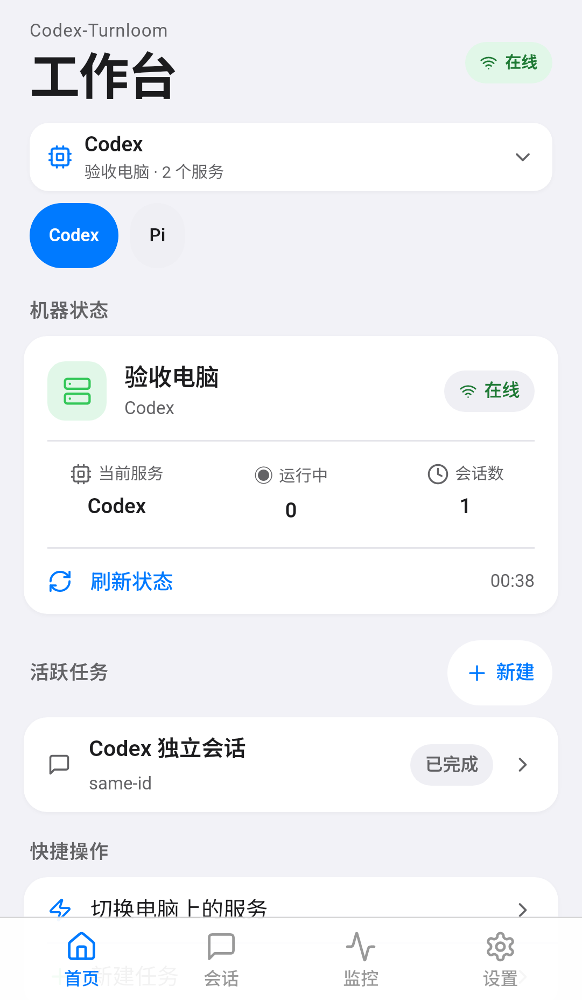
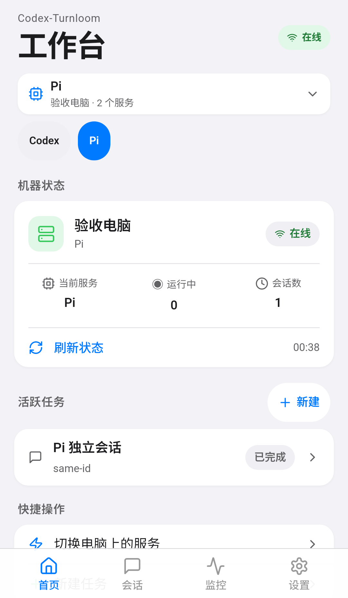
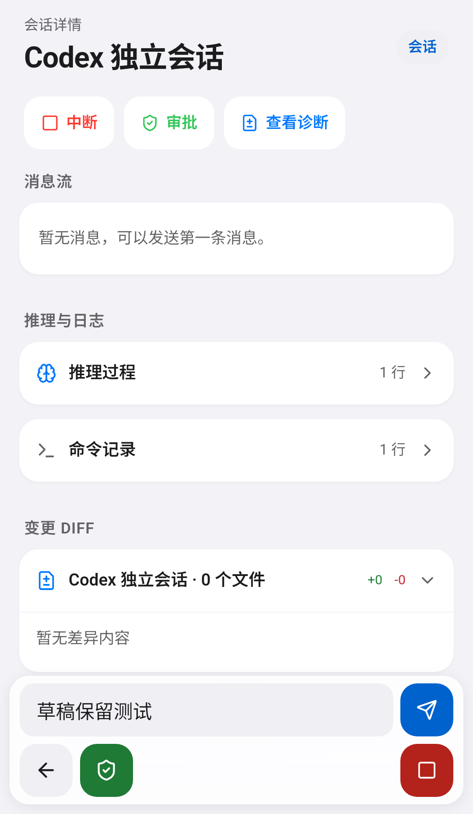
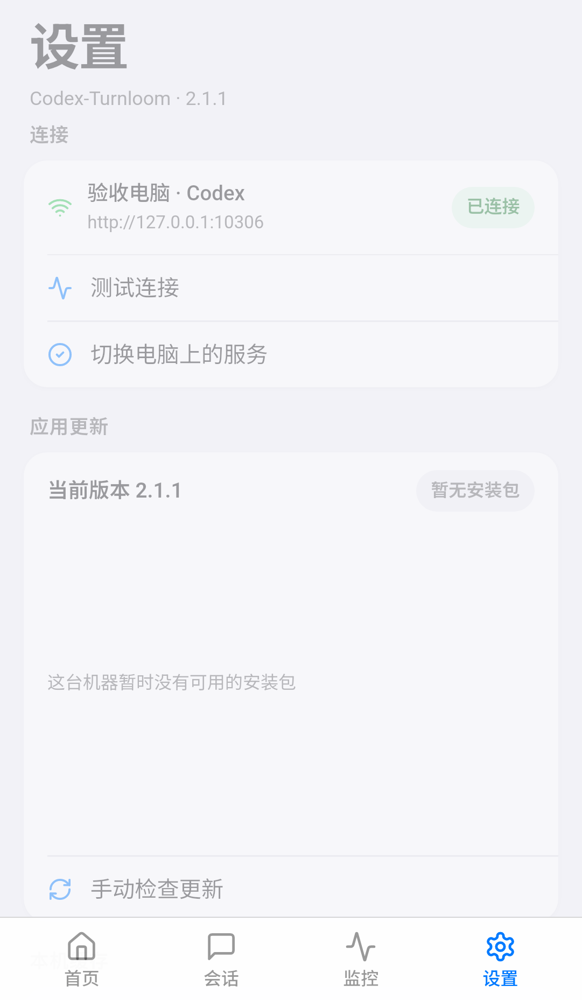
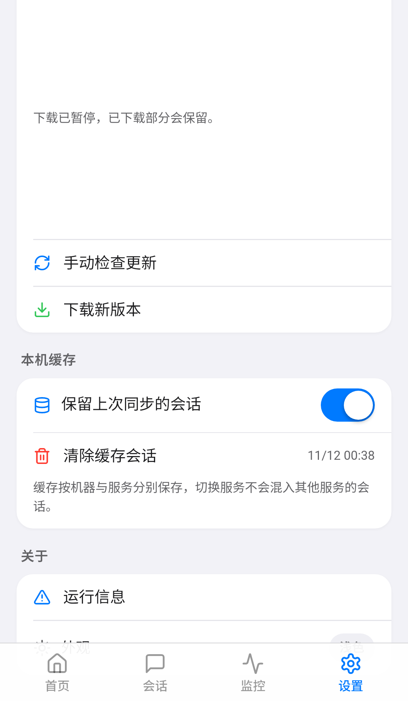
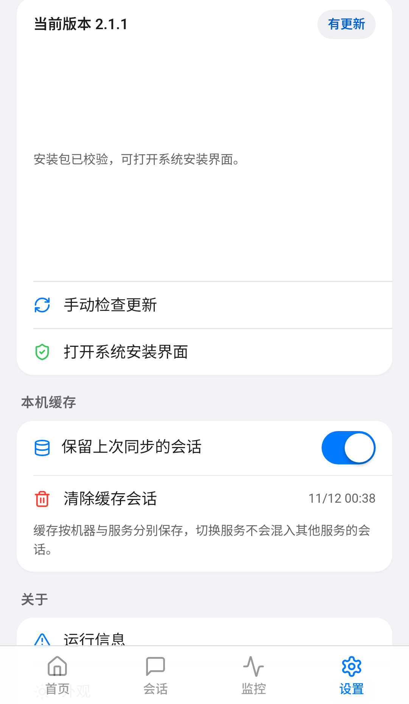
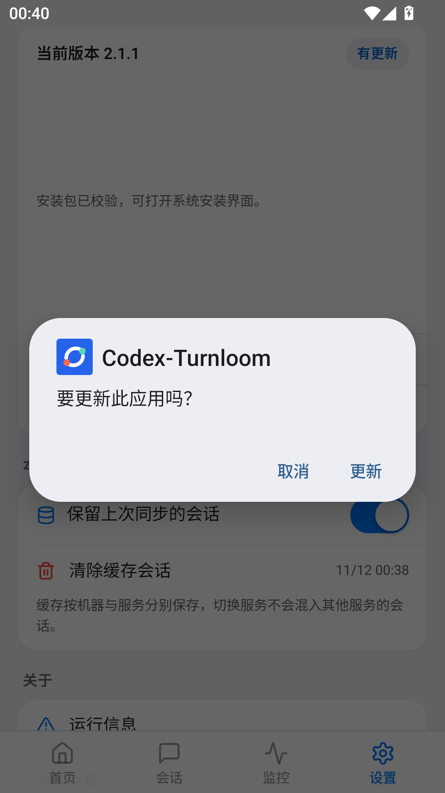
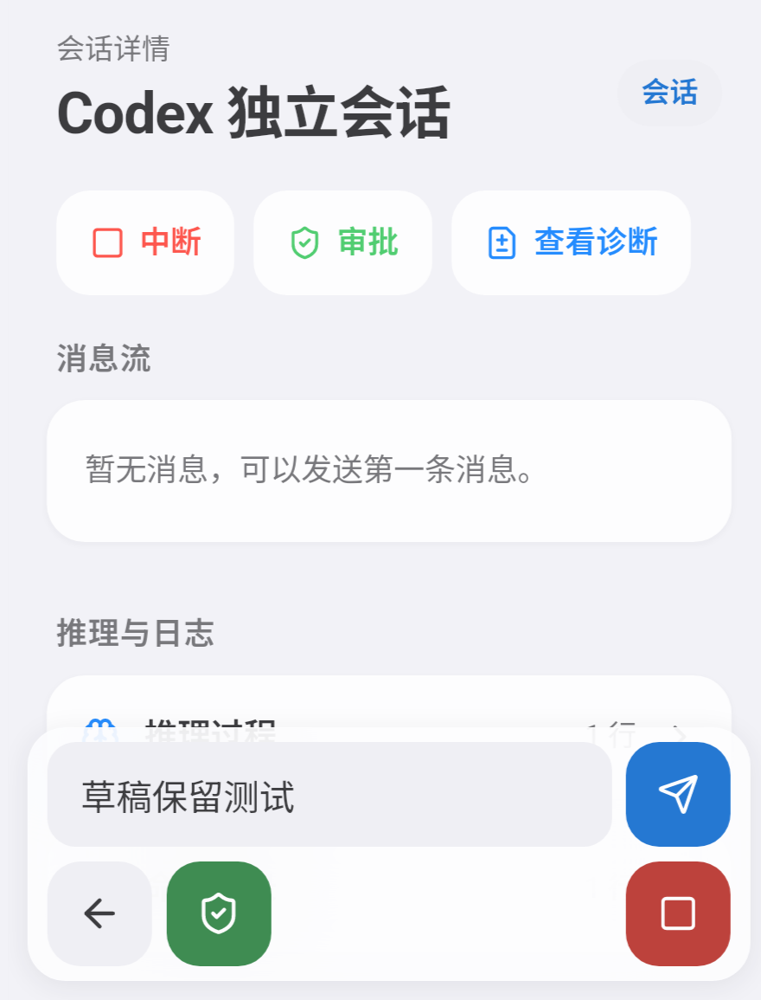
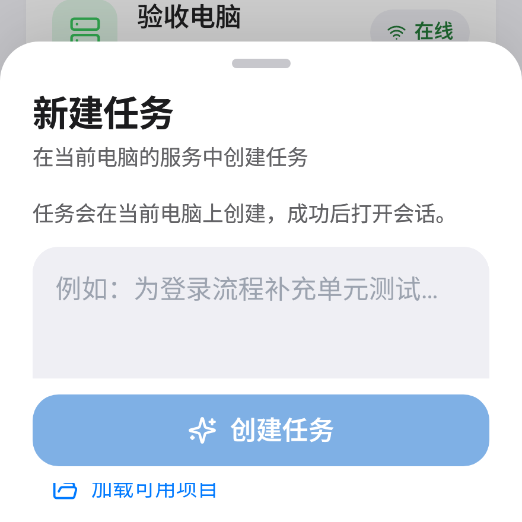

复审结论
主要问题不是视觉样式不足，而是若干界面承诺没有被状态机和生命周期完整兑现。
最终产物
包名 com.codex.turnloom.app，Android 8.0+，同包名与既有测试证书，支持覆盖安装。
SHA-256
f020edd46893f1b712c3ef2baa586ce64c9d5c4b8c1e25082e493e1ac64f613e

独立新用户复审和视觉复审以旧 2.1.0 包为基线；它们给出的问题清单已被逐项核对。本报告中的最终设备断言和截图均重新安装、绑定 2.1.1 实际 base.apk SHA 后取得，不沿用旧包结论。
用户路径是否真的走得通
使用真实 WebView 指针/输入事件、隔离 HTTP 服务和受控失败状态；未向真实 Codex/Pi 发任务。
| 场景 | 结果 | 状态 |
|---|---|---|
| 首启未配对 | 只显示连接电脑，四个业务 Tab 不挂载；可直接扫码或输入地址/访问码。 | PASS |
| 错误访问码 401 | 明确提示访问码不正确；保留服务地址，清空失效访问码并展开表单；输入新码后“重试连接”真正发出发现请求并进入工作台。 | PASS |
| Codex → Pi → Codex | 使用各自独立 token；列表、详情、筛选和草稿按机器+服务隔离；迟到响应不能覆盖当前服务。 | PASS |
| Pi 服务 503 | 显示“服务暂时不可用”并给出其他服务入口；可直接切回可用 Codex，无需重新扫码。 | PASS |
| 详情与草稿 | 空消息显示“暂无消息，可以发送第一条消息”，失败可重试；前台串行刷新真实回复；退出详情再进入，草稿仍保留。 | PASS |
| 忘记电脑 | 改为确认抽屉，明确移除配对及本机会话缓存；取消后工作台和配对保持不变。 | PASS |
| 相机扫码 | 候选包已实测权限拒绝、再次允许、ScannerActivity 占用 Camera 0、取消返回；最终包扫码源码一致。 | 部分 |
| 真实 QR 解码 | 没有让镜头读取二维码，也未注入伪造成功回调；权限/预览不等于识别成功。 | 未验证 |
带图设备证据
图片均由本次安装的 App 或 Android 系统界面采集；点击可查看原图。证据 JSON 与报告同目录。



















已落地的关键修复
验证矩阵
| 验证项 | 结果 | 证据 |
|---|---|---|
| Node 24 / 离线 Node 22 全量 | 285/285，fail=0、cancelled=0 | Node24 日志 · Node22 日志 |
| TypeScript / 原生 JVM / 静态门禁 | 0 errors / 8 tests / 26 门禁 | 原生测试日志 |
| APK 编译、对齐、v2/v3 签名、badging | PASS | 构建清单 |
| guest 实际 base.apk SHA | 与最终文件一致 | 安装 SHA · 设备结果 |
| 连接/会话/失败恢复/草稿/空态/忘记电脑 | 10/10 | device-result.json |
| 更新元数据、暂停、跨 Tab 保留、非零 Range 续传、原生校验 ready | 5/5 | update-result.json |
| 系统安装器确认与取消恢复 | PASS | Android UI XML · 截图 |
| 320×420 / 320×320 几何及命中区 | PASS | layout-result.json |
“系统安装器确认”使用 scratch 中仅用于验收的同签名 83 版隔离包；已经看到系统确认页并选择取消，未点击“更新”实际覆盖正式 82 版。测试 HTTP 由隔离夹具提供，不能据此宣称生产桌面网关或真实模型执行已验收。
仍保留的边界
- 真实镜头 QR 识别未完成；权限、相机占用与取消不等于解码成功。
- 实际点击系统“更新”后的覆盖安装未执行，保留正式 82 版及已有数据。
- 生产桌面 8787 入口没有迁移；公网、真实桌面二维码和生产链路未切换。
- API 26/27 只有编译及兼容分支证据；本轮设备为 Android 15。
- 凭据存于应用私有 MODE_PRIVATE SharedPreferences，尚未做应用层加密。
- 不宣称全设备视觉、物理键盘或完整 GPU 性能矩阵通过；短视口为 CDP 代理。
- 当前签名仍是既有测试证书；本轮未做生产签名迁移或公网服务发布。
交付与清理
当前交付目录保留 2.1.1 最终包与 2.1.0 / 2.0.0 两个历史包，不删除历史证据。本地更新暂存包已同步为最终字节，并由 release reader 重新哈希验证；旧暂存内容备份仅保留在 scratch。
原配对经应用存储桥备份后逐键比较恢复；包含凭据的备份不进入交付目录。临时相机与安装来源授权已撤销，CDP / reverse 转发移除，隔离 HTTP 服务停止，phone 租约已释放。
最终 APK：f020edd46893f1b712c3ef2baa586ce64c9d5c4b8c1e25082e493e1ac64f613e
当前包内 JS：见 build-manifest-2.1.1.json 与 source-manifest.json